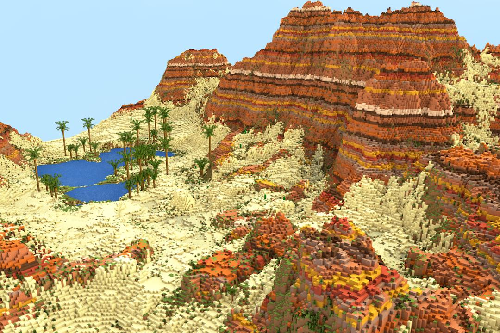

Salgados · Massas fritas/assadas
Pão sírio

Ingredientes
- 6 xícaras de farinha de trigo
- 1 tablete (15 g) de fermento para pão
- 2 xícaras de água morna
- 1 1/2 colher (chá) de sal
- 1 colher (chá) de açúcar
- 2 colheres (sopa) de óleo
- Farinha de trigo para polvilhar
- Óleo para untar
Modo de preparo
- Preaqueça o forno em temperatura baixa (100 °C). Peneire a farinha numa tigela grande e aqueça no forno.
- Dissolva o fermento em 1/4 xícara de água morna. Acrescente o restante da água, o sal e o açúcar; misture bem.
- Retire a farinha do forno, separe 2 xícaras. Faça uma cova na farinha restante, despeje a mistura de fermento e mexa até formar uma pasta. Cubra e deixe descansar protegida do frio até espumar.
- Junte a farinha reservada e o óleo aos poucos; bata bem por 10 minutos.
- Sove sobre superfície enfarinhada por 10 minutos até ficar lisa por dentro e levemente enrugada por fora. Forme uma bola, unte com óleo, cubra com plástico e deixe crescer por 1 hora.
- Despeje, sove 1 minuto e forme 10 bolas iguais. Abra cada uma com 20 cm de diâmetro e coloque sobre pano enfarinhado. Cubra e descanse 20 minutos. Preaqueça o forno em temperatura média (200 °C).
- Unte uma assadeira com óleo e coloque na parte mais alta do forno até ficar bem quente. Asse um pão de cada vez por 4 a 5 minutos, até incharem. Envolva em pano limpo para manter macios.
Observação: Congelamento: embrulhe em filme plástico, congele até firmar e passe para saco plástico sem ar. Descongelamento: temperatura ambiente por 1 hora. Fermento biológico fresco pode ser congelado em papel-alumínio (dura 3 meses).